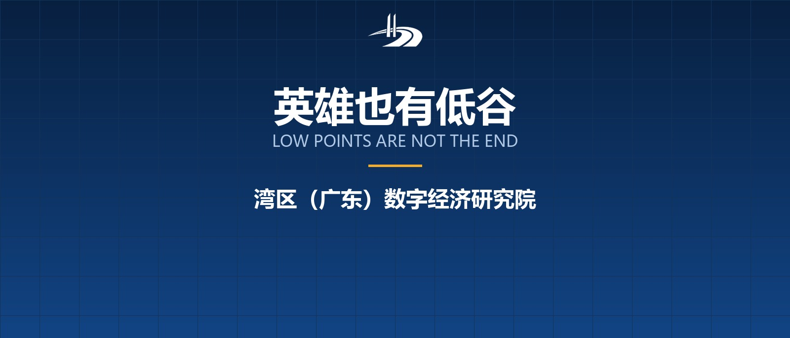
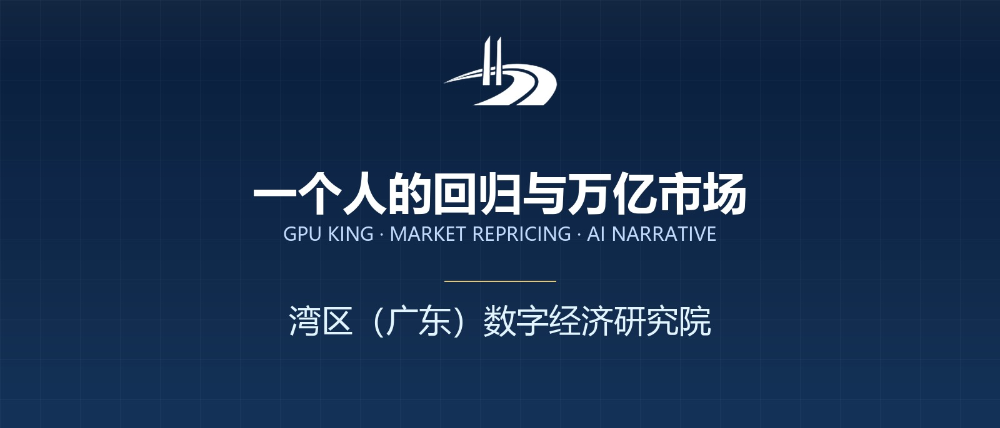
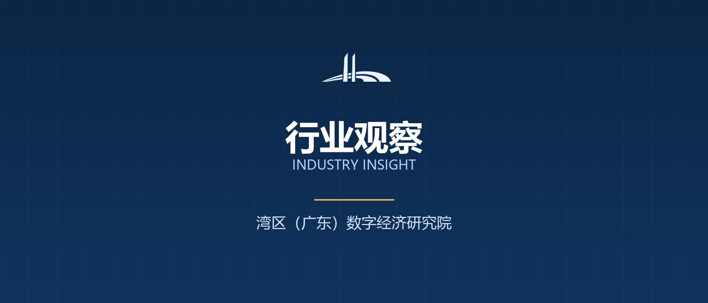

围绕教育、创业、数字经济与国际教育等领域，提供基于公开事实的深度观察与趋势研判。以下为本栏目文章，作者：皮伟。

从新高教半年拟出售 9.5 亿元院校资产出发，剖析资本开支、生源分化、商誉减值与监管变化，研判从买学校到办学校的行业转向。
阅读详情 →
从秦琼卖马、韩信受胯下之辱等典故，到史玉柱、褚时健、王兴、俞敏洪、罗永浩的二次出发，说明低谷不是终点：先稳住自己，再复盘归因，用行动重建信用。
阅读详情 →
智能算力已达 2592 EFLOPS，全球 AI 基建规模约 9750 亿美元，而 Gartner 测算回报缺口达 4.9 万亿美元。梳理投入端与产出端的落差，研判从拼规模转向要实效的趋势。
阅读详情 →
从中行开平支行三任行长卷走 4.83 亿美元的旧案出发，剖析权力不受制衡、信息失真、独立监督缺位的失效逻辑，结合康得新、紫晶存储、恒大地产、金通灵等案例，说明监管为何是必需品。
阅读详情 →
从辞任到全票复职的 11 天，英伟达单日上涨 31.48%、市值一天增加 9520 亿美元。梳理时间线与数据，分析资本为何不允许他退场、AI 叙事为何从讲故事转向算账，并研判反弹边界。
阅读详情 →
打到顶峰靠胆识、机遇与执行力，守住巅峰再攀高峰靠规则意识、资本驾驭能力和对人性的克制。以雷士照明为主线，结合国美、俏江南、真功夫、华为、京东、苹果等公开案例归纳分析。
阅读详情 →
从硕士授予权稀缺、收费项目收紧、海外认证新规与退出预测等事实出发，逐一审视四条路径的门槛与代价，研判民办教育从规模扩张转向能力竞争的走向。
阅读详情 →
从春来教育约 10 亿港元收购都柏林商学院的交易事实出发，梳理民办院校在降本、治理补课、中外合作与权益设计上的做法，研判跨境交付与监管门槛抬高下的行业趋势。
阅读详情 →中科大、北邮、同济、清华、北大等高校陆续把大模型 Token、算力账户与算力券发放到师生账户，AI 使用额度正成为大学统一配置的基础资源。文章拆解三条技术路线、使用数据与治理规则。
阅读详情 →韩国高校把 AI 额度挂到统一平台、课程与专业上，按科目分配、按期回收；首尔大学 72% 可用对象一个月用完全年额度。文章认为「领了不用」是观察偏差，并给出民办院校跟进建议。
阅读详情 →我们将持续精选数字经济与人工智能领域的深度观察。